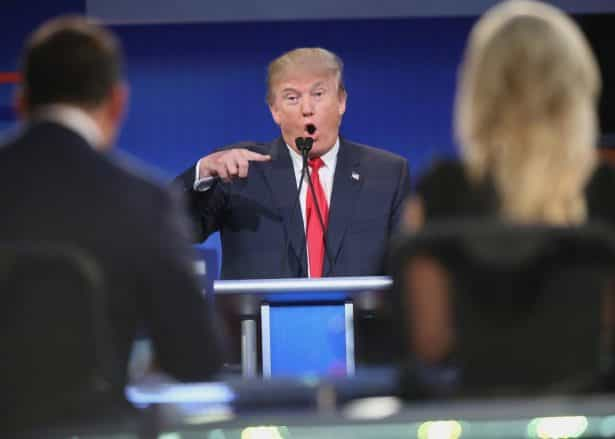
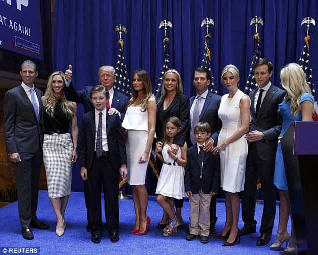

Jef enjoys bloviating about various subjects such as sport, politics, men's style, film and culture. Read more at thecerclerouge.com


“The thing worse than rebellion is the thing that causes rebellion.”
“Power concedes nothing without demand. It never has, and it never will”
—Frederick Douglass
Nearly two years ago, I wrote an article for ROK describing Gamer Gate and its potential marker as a turning point in the Culture War. The major premise was that in attempting to alienate and demean gamers as misogynist losers, the social justice brigade overplayed its hand. It incited a violent, effective backlash, which proved to be a counterweight to the incessant march of Cultural Marxism into the arena of gaming, at least for the time being.
As positive as the Gamer Gate uprising was, at the end of the day it was taking place in a somewhat peripheral arena. Video games are for most people nothing more than entertainment, and as such the gaming medium was always unlikely to be the springboard for the sweeping cultural changes espoused on sites such as this. To effect real change, a GamerGate–like force needed to emerge in the wider sphere. The waves Donald Trump is currently making in politics is looking like such a force, with his candidacy representing another, even bigger marker in the Culture War.
Like most people, I completely dismissed Trump’s candidacy when he first announced it in June of 2015. I thought it was merely a publicity stunt, and summarily wrote him off. I had paid little attention to the election in general, until the outrage over Trump’s comments about John McCain as a war hero bubbled up.
It wasn’t so much the merits of what Trump had said as much as his willingness to spit in the eye of the Republican top brass which piqued my interest. I had long since become disillusioned with the Republican party, and the prospects of a Jeb Bush nomination had me ready to tune out of politics yet again. Trump’s antics made me pay closer attention to what he was offering, through to the first Republican Debate a few weeks after the McCain outrage.

It was 5 minutes or so into that debate, held on Fox News, that I punched my ticket onto the #TrumpTrain and never looked back. In what was clearly a hit job from Fox, the moderators opened the debate by asking the contestants if they would refuse to pledge to support the Republican nominee and not run as a third party candidate. Only Trump raised his hand.
Next, Megyn Kelly asked him an obvious gotcha question relating to “misogynous” things Trump had said in the past. This treatment of Trump, who was at the time the leading candidate in the polls, in front of a record audience largely drawn in by Trump, by right-leaning Fox News, was a confirmation of what I had suspected: that the establishment in both politics and media were anti-Trump. As per Roosh, this was merely a sign that the individual in question has ideas that are beneficial to America.
The combination of Trump’s wealth, business expertise, virtually 100% name recognition, multi decade exposure to the media and natural charisma enabled him to break through that establishment behemoth which lined against him. A politician with similar ideas but lesser means would have been drowned out by establishment donors. Another billionaire without the media experience would have been crushed by the intense media scrutiny and gotcha games, while Trump regularly trolls the media with ease.
Considering his anti-globalist, anti-Cultural Marxist, America First message, Trump is perhaps the only man in America who could have had the impact he has.
A Trump candidacy wouldn’t have been necessary but for the massive changes in the economic and cultural milieu over the last 50 years. Consider the following quote from President Obama in an interview he did with NPR at the end of last year:
I do think that the country is inexorably changing, I believe in all kinds of positive ways. I think we are — when I talk to my daughters and their friends, I think they are more tolerant, more welcoming of people who are different than them, more sophisticated about different cultures and what’s happening around the world.
But I do think that when you combine that demographic change with all the economic stresses that people have been going through because of the financial crisis, because of technology, because of globalization, the fact that wages and incomes have been flatlining for some time, and that particularly blue-collar men have had a lot of trouble in this new economy, where they are no longer getting the same bargain that they got when they were going to a factory and able to support their families on a single paycheck, you combine those things and it means that there is going to be potential anger, frustration, fear. Some of it justified but just misdirected. I think somebody like Mr. Trump is taking advantage of that. That’s what he’s exploiting during the course of his campaign.
What he is essentially describing are the effects of the twin forces of cultural and economic Marxism applied incrementally over decades.
Economically, the US economy went from a goods producing economy supported by savings and investment to a smartphone app producing economy supported by exponentially increasing debt, conspicuous consumption, and administrative, legal and compliance work.

We don’t need this guy anymore because we have a service economy now
This ‘new economy’ was ultimately constructed by the academics influenced by John Maynard Keynes, who ended up dominating the intellectual and policy-making landscape of postwar Western nations.
The new economy brought with it the death of the American Dream. For most, merely going to college now requires going tens of thousands of dollars in debt. Assuming one gets a good paying job, and finds a girl worth marrying, it is likely that she too is inundated with student loans which become an further liability.
Buying a house and a car requires much more debt relative to incomes than 50 years ago. Keep in mind that modern incomes are supplemented by a second income earner, whereas 50 years ago it was most likely one breadwinner. On top of this, the dual breadwinner of today is likely maxed out on multiple credit cards, all to achieve the same as the single breadwinner did 50 years ago with minimal debt and room for savings to boot.
In short, the American Dream lifestyle was far more attainable in years past, and didn’t require one to sell himself deeper into debt slavery at every turn.
Culturally, the US has succumbed to the Marxist ideals of equality, diversity, and the promotion of ‘oppressed’ classes above all else. Note that in the Obama quote above, he immediately cites the ‘tolerance’ and worldly sophistication of his daughters and their friends as evidence that the United States has changed for the better. The subversion brought about by cultural Marxism is most pronounced in the policing of language, beliefs and attitudes through political correctness.
Cultural Marxists view racism, sexism, homophobia, Islamophobia and other violations are as extremely grave offenses, while simultaneously believing their existence is prevalent even in the most mundane situations. For example, correcting someone’s grammar is potentially racist, and air conditioning is sexist.
Despite the supposed ubiquity of ‘bigotry,’ the penalties for these crimes are still severe. This corrosive paradigm exists solely to control people. If one can lose employment and thus the means to survive because of a mean post on Facebook, the message is clearly that one must fall in line with the prevailing narrative or else.
This makes the media’s incessant charge of fascism against Trump that much more laughable, but we should know from Vox Day that SJW’s always project. Their replacement of objective truths with Marxist whims intended to serve a subjective vision of ‘equality’ has ultimately brought about it a much more unstable society.
In Democracy In America, Alexis de Tocqueville wrote the following describing the uniqueness of the American in the world:
Their strictly Puritanical origin, their exclusively commercial habits, even the country they inhabit, which seems to divert their minds from the pursuit of science, literature, and the arts, the proximity of Europe, which allows them to neglect these pursuits without relapsing into barbarism, a thousand special causes, of which I have only been able to point out the most important, have singularly concurred to fix the mind of the American upon purely practical objects. His passions, his wants, his education, and everything about him seem to unite in drawing the native of the United States earthward; his religion alone bids him turn, from time to time, a transient and distracted glance to heaven.
This judgment is a bit harsh given that at the time Tocqueville was writing, the US was still a fledgling country trying to establish itself. The country didn’t have time for establishing a robust art and literature scene when it had to build itself from the ground up.
America did built itself up, and then some, through the prioritization of freedom, competition and hard work, essentially being as ruthless and pragmatic as possible in pursuit of commercial ends. Christianity generally set the moral boundaries. The sanctity of property rights and patriarchal family structures established a strong foundation for civilization, ensuring that the gains made could be passed on to the next generation. This is essentially ‘traditional America’ as we know of it today.
Economic and cultural Marxism erodes these values at every turn. ‘Socialism,’ Tocqueville wrote, ‘seeks equality in restraint and servitude.’ The push to normalize homosexuality, broken families and androgyny leads to an erosion of the culture at its very base.
So when Donald Trump came along, with his simple message of ‘Make America Great Again,’ those who felt marginalized by the ‘new economy’ and political correctness suddenly had a voice. Conversely, those who wish to see traditional American values destroyed felt a pang of worry upon hearing the Trump slogan, as it invokes an age of greatly reduced, if not nonexistent Cultural Marxist influence.
Indeed, the backlash has been strong, from all sides. Kevin Williamson of the conservative National Review wrote an article back in March eviscerating the mostly white, rural, industrial Trump supporter for having the temerity to long for a time when manufacturing jobs were still plentiful, even writing that those communities ‘deserved to die’ for not getting with the globalist program. Hillary Clinton’s infamous ‘deplorables’ comment was made in reference to a similar constituency.
In the face of long overdue resistance from average Americans to the destructive forces of economic and cultural Marxism, that the elites have chosen to double down in their disdain for those in opposition should underline the importance of the battle at hand.
The personal contrast between Trump and Hillary Clinton is especially clear, with their personal lives being emblematic of the large choice America is facing. Trump is a patriarch, the unabashedly masculine head of a strong family. His wife is feminine, and has remained largely in the background during the campaign. He has five children, who despite growing up absurdly wealthy, did not succumb to the same pitfalls many rich kids do. Trump has eight grandchildren to whom the wealth he’s amassed are to be bequeathed at some stage. While not perfect, Trump is a man of conviction; he sticks to his guns and is bold and defiant when challenged.

Clinton shares Trump masculinity, which would be flattering if she wasn’t a woman. Her pant-suit-wearing-career-girl-lawyer-power-hungry-striver persona is cartoon-like. She manage to pop out the standard one child but remained laser-focused on her career, eschewing the idea of baking cookies and having tea, as she once put it. She is running on a hyperfeminist platform, to the point where feminist icons were being trotted out to warn women that eternal damnation awaits for not voting for a fellow woman.
Everything about Trump’s lifestyle, from his patriarchal headship to his above replacement rate family formation, is frowned upon in Current Year America. While the ‘strength and independence’ of Hillary Clinton is praised to the heavens.
Politically, Trump’s candidacy has given Americans a real choice for once. Consider that from 1980 to 2013, a member of either the Clinton or Bush family has been in the White House or among the President’s Cabinet. To the extent that the United States has deteriorated over that time, the establishment from both parties has directly overseen it. The media’s favored Republican candidates, such as Jeb Bush, Marco Rubio and John Kasich are all from the same Bush political family tree meaning there would have been little change had they won.
While I have no illusions about Trump being the perfect candidate, the best one can hope for is the right candidate for the time. At this time in American history, a change away from default Cultural Marxist views is what is needed. In order to achieve that change would require a transcendent candidate to snap people out of thinking, and voting in the default way set by the elites.
Trump, with his strong frame and appeal to a strong national identity, touches an emotive chord which has reached a large number of people. There are many voters who have either never voted, or previously voted Democrat who are lining up to vote for Trump.
Even those who think Trump is too much of a blowhard must concede that he is probably what is necessary to turn things around, at least initially, in an emotional sense. It’s not as though Barack Obama, for example, won in 2008 because the electorate appreciated the intricacies of his cap and trade proposals. He won because he uttered ‘hope and change!’ every other phrase, and that resonated with people in that time.
The real, fundamental change required is more quickly had via an appeal to emotion versus logic and reason. Once Trump succeeds in building the platform to Make America Great Again, the policy wonks can drive it home, provided they promote policies in the same vein.
The main idea in Nassir Ghaemi’s 2012 book, A First Rate Madness is that in times of complexity and turmoil, the best leaders are often the ones who are unconventional, with abnormal minds and the ability to think outside the box. During times of tranquility, more even-keeled, square-like types are better to maintain the flow.

To show this, Ghaemi explores the mental backgrounds of historical figures such as Winston Churchill and General William Sherman to understand why they were uniquely equipped to deal with the crises they faced. In contrast, square-like figures such as Neville Chamberlain, Tony Blair and George W. Bush were like deer in headlights when the pressure was on.
Trump might be ‘extreme’ and ‘not presidential,’ but in this climate being moderate means criminalizing criticism of an ever expanding list of protected classes by labeling everything as hate speech. Being presidential means refusing to acknowledge threats to society, if those threats come from those protected classes.
The years ahead are shaping up to be years of economic and cultural crisis. These crises are born of the Cultural and Economic Marxist dogma. As per the Frederick Douglass quote at the beginning, the rebellion spearheaded by Trump is preferable to the Marxist status quo that it responds to, and seeks to replace, even though there may be turbulence in the transition. It is exactly a candidate like Trump, ‘insane’ from the Marxist vantage point, who is most apt to cure a nation afflicted with Marxism.
Read More: WATCH: Why Men Should Vote For Donald Trump